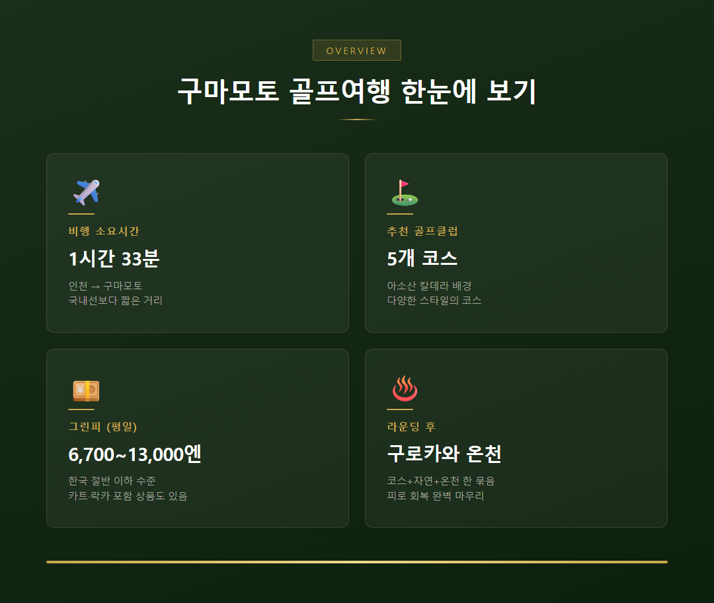
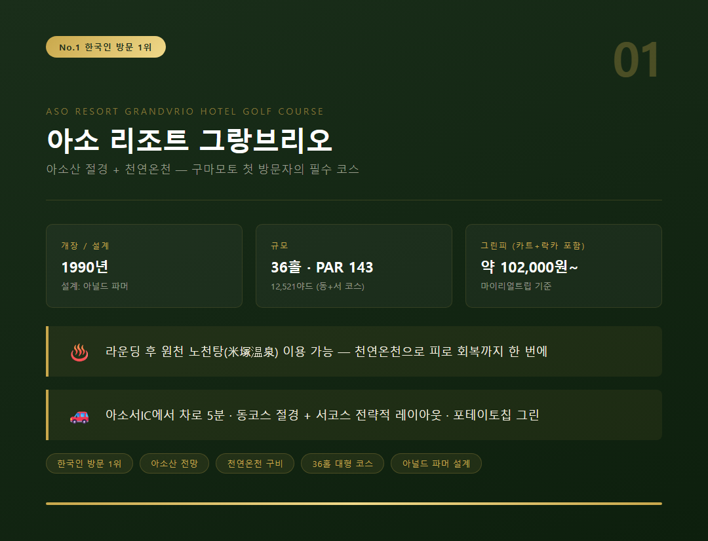
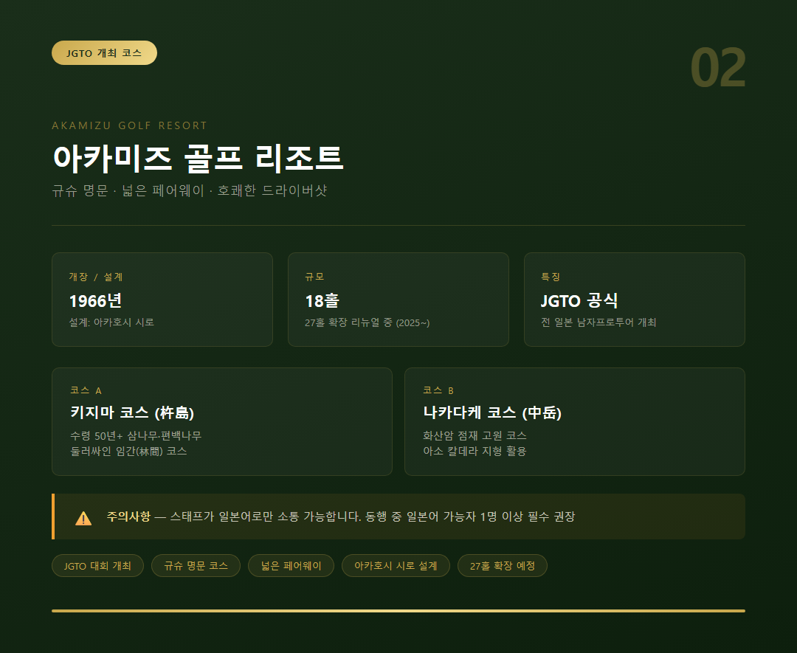
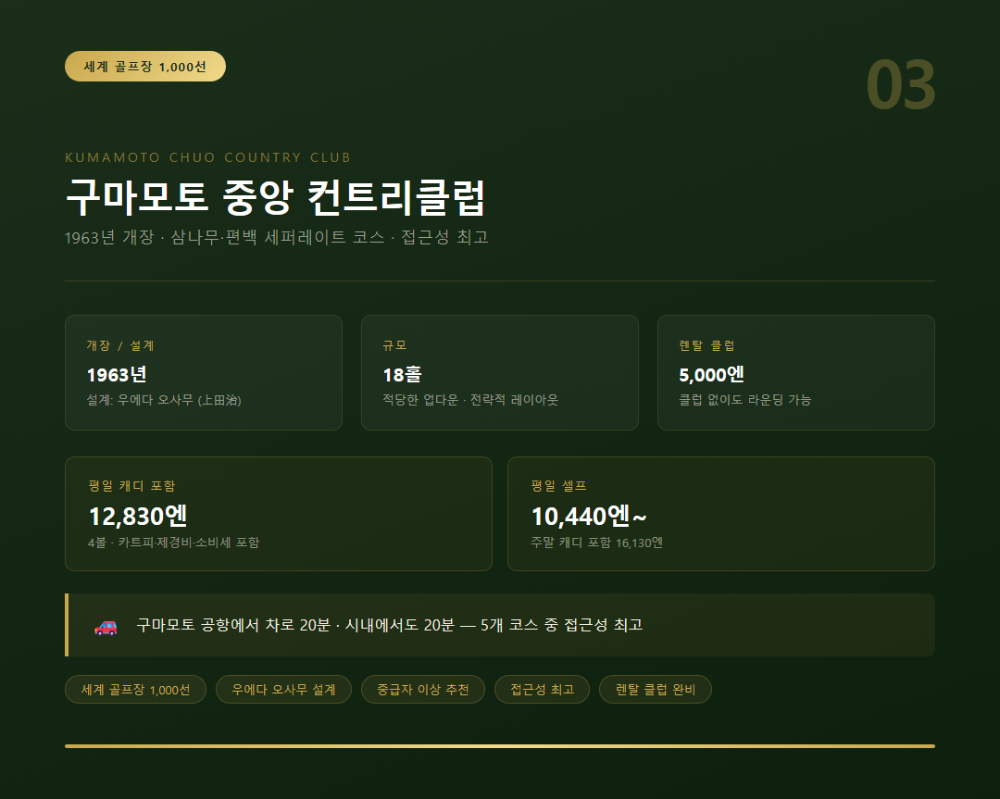
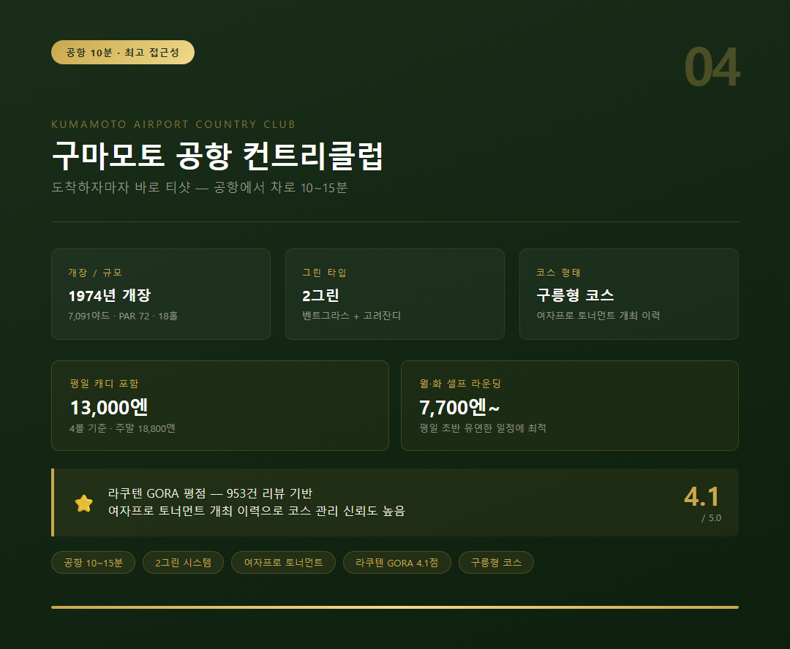
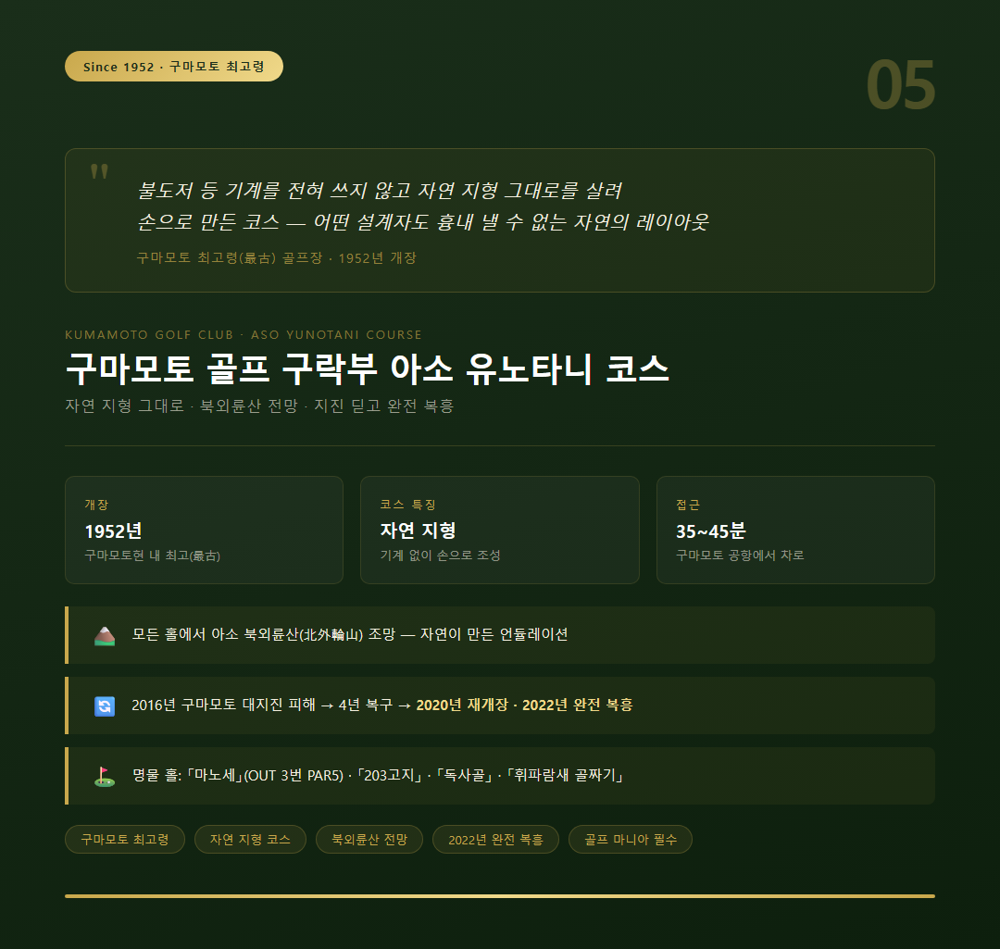

저는 해외 골프여행을 고를 때 한참 망설이는 편입니다. 비행시간이 길면 첫날을 통째로 날리고, 그린피가 비싸면 라운딩 수를 줄여야 하니까요. 그런데 구마모토 골프를 처음 알게 된 날은 달랐습니다. 인천에서 비행기로 1시간 33분 — 국내선보다 짧은 그 숫자가 모든 망설임을 끊어버렸습니다.
아소산(阿蘇山)을 배경 삼아 돌고, 라운딩이 끝나면 온천으로 마무리하는 하루. 그것도 한국 그린피 절반 이하 수준으로요. 이번 글에서는 제가 리서치하며 추려낸 구마모토 골프 클럽 다섯 곳을 솔직하게 소개해 드리겠습니다.

첫 번째로 소개할 곳은 '아소 리조트 그랑브리오 호텔 골프장'입니다. 구마모토를 처음 방문하는 골퍼라면 열에 아홉은 이곳을 먼저 찾는데요. 한국인 방문자 수 기준 구마모토 1위 골프장이라는 수식어가 괜히 붙은 게 아닙니다.

1990년 개장, 설계는 아널드 파머(Arnold Palmer)입니다. 36홀(동코스+서코스) 규모로 총 12,521야드, PAR 143. 동코스는 아소산의 절경을 병풍 삼아 타내려치는 홀과 타올리는 홀이 공존하는 전략적 레이아웃입니다. 서코스는 연못이 얽힌 홀이 많아 샷의 정확성을 요구하고요. 그린이 '포테이토칩 형태'로 굴곡이 심해 퍼팅 난이도도 만만찮습니다.
라운딩 후에는 클럽하우스에서 원천 노천탕(米塚温泉)을 이용할 수 있습니다. 근육통과 피로 회복에 효과적인 천연온천이라 라운딩 뒤 몸을 풀기에 더할 나위 없습니다. 마이리얼트립 기준 그린피+카트피+락카피 포함 약 102,000원대부터 시작하며, 아소서IC에서 차로 5분 거리라 접근성도 좋습니다.
두 번째는 '아카미즈 골프 리조트(赤水ゴルフリゾート)'입니다. 1966년 개장 역사에 일본 골프코스 설계의 거장 아카호시 시로(赤星四郎)가 만년의 집대성으로 설계한 코스인데요. 2025년 12월 서울신문에서 "규슈를 대표하는 명문 코스 중 하나"로 보도될 만큼 최근 한국 골퍼들 사이에서 주목받고 있습니다.

코스는 두 가지 성격이 뚜렷하게 나뉩니다. 키지마 코스(杵島コース)는 수령 50년 이상의 삼나무·편백나무에 둘러싸인 임간 코스, 나카다케 코스(中岳コース)는 화산암이 점재하는 고원 코스입니다. 전반적으로 플랫하고 페어웨이가 넓어 호쾌하게 드라이버를 뽑는 맛이 있습니다.
과거 일본 남자프로골프투어(JGTO) 공식 대회를 개최한 이력이 있는 정통 챔피언십 코스라는 점도 매력 포인트입니다. 다만 한 가지 주의사항이 있습니다. 스태프가 일본어로만 소통이 가능하므로 동행 중 일본어 가능자가 한 명은 있어야 불편함 없이 이용할 수 있습니다. 2025년 기준 27홀 확장 리뉴얼 중이라, 완공 이후 더욱 풍성한 코스를 경험할 수 있을 것입니다.
세 번째는 '구마모토 중앙 컨트리클럽(くまもと中央カントリークラブ)'입니다. 1963년 개장 이래 구마모토를 대표하는 명문 골프장으로 자리를 지켜왔고, '세계 골프장 1,000선'에도 선정된 코스입니다. 설계자는 일본 골프코스 설계의 대부라 불리는 우에다 오사무(上田治)입니다.

楠·檜·杉 — 굵은 나무들이 코스를 완전히 세퍼레이트해 각 홀마다 프라이빗한 분위기를 만들어냅니다. 적당한 업다운과 전략적 레이아웃 덕분에 중급자 이상에게 특히 적합한데요. 구마모토 공항에서 차로 20분, 시내에서도 20분 거리라 접근성이 다섯 곳 중 가장 좋은 편입니다.
요금은 캐디 포함 평일 기준 12,830엔(4볼, 카트피·제경비·소비세 포함), 주말은 16,130엔입니다. 셀프 라운딩은 평일 10,440엔부터 시작합니다. 렌탈 클럽도 1세트 5,000엔에 이용할 수 있으니 클럽 없이 와도 라운딩이 가능합니다.
네 번째는 '구마모토 공항 컨트리클럽(熊本空港カントリークラブ)'입니다. 이름 그대로 공항에서 차로 10~15분 거리에 있습니다. 골프여행 첫날 공항에 내리자마자 체크인도 전에 라운딩부터 치고 싶은 분께 — 이곳이 답입니다.

1974년 개장, 총 7,091야드 PAR 72의 18홀 구릉 코스입니다. 2그린 채택(벤트+고려잔디)이라 시즌에 따라 다른 그린 컨디션을 경험할 수 있는 것도 특징입니다. 여자프로 토너먼트를 개최한 이력이 있는 코스라 관리 상태도 믿을 만합니다. 라쿠텐 GORA 평점 4.1점(953건 리뷰)이라는 숫자가 그 신뢰를 뒷받침해주고 있습니다.
요금은 평일 캐디 포함 13,000엔(4볼 기준), 주말 18,800엔입니다. 월·화요일 셀프 라운딩은 7,700엔으로 더욱 합리적인데요. 일정을 유연하게 잡을 수 있다면 평일 초반을 노리는 것이 좋습니다.
다섯 번째는 제가 가장 마음에 품어둔 곳입니다. '구마모토 골프 구락부 아소 유노타니 코스(熊本ゴルフ倶樂部 阿蘇湯の谷コース)' — 1952년 개장으로 구마모토현 내 최고(最古) 골프장입니다.

이 코스가 특별한 이유는 하나입니다. 불도저 등 기계를 전혀 쓰지 않고 자연 지형 그대로를 살려 손으로 만든 코스라는 것입니다. 모든 홀에서 아소 북외륜산(北外輪山)이 내려다보이며, 자연이 만들어낸 언듈레이션은 어떤 설계자도 흉내 낼 수 없습니다. 명물 홀도 다채롭습니다. 거대한 마운드가 홀 중심에 자리한 아웃 3번 「마노세」, 「203고지」, 「독사골」, 「휘파람새 골짜기」 — 이름만 들어도 코스의 개성이 느껴집니다.
2016년 구마모토 대지진으로 큰 피해를 입었지만, 약 4년의 복구 끝에 2020년 5월 재개장했습니다. 2022년 8월에는 지진으로 변형됐던 아웃 3번 PAR5까지 완전 복원되어, 지진 전과 동일한 레이아웃의 '완전 복흥'을 이뤄냈습니다. 구마모토 공항에서 차로 35~45분 거리라 다른 코스보다 이동이 조금 더 걸리지만, 골프 마니아라면 이 코스 하나 때문에라도 구마모토행 비행기에 오를 이유가 충분합니다.
딱 한 줄로 정리하면 이것입니다. 구마모토 골프는 '코스+자연+온천'이 한 묶음으로 딸려옵니다.
한국에서 1시간 30분 남짓이면 닿는 거리에, 아소산 칼데라를 배경으로 한 코스들이 이렇게 많다는 사실 — 아직 모르시는 분이 많은데요. 가을 단풍 시즌이나 봄 벚꽃 시즌에 렌터카 한 대 빌려 아소 지역을 돌아보시길 진심으로 권해 드립니다. 라운딩을 마치고 구로카와 온천에 몸을 담갔을 때, 그 순간이야말로 — 진짜 골프여행이 완성되는 순간일 것입니다.